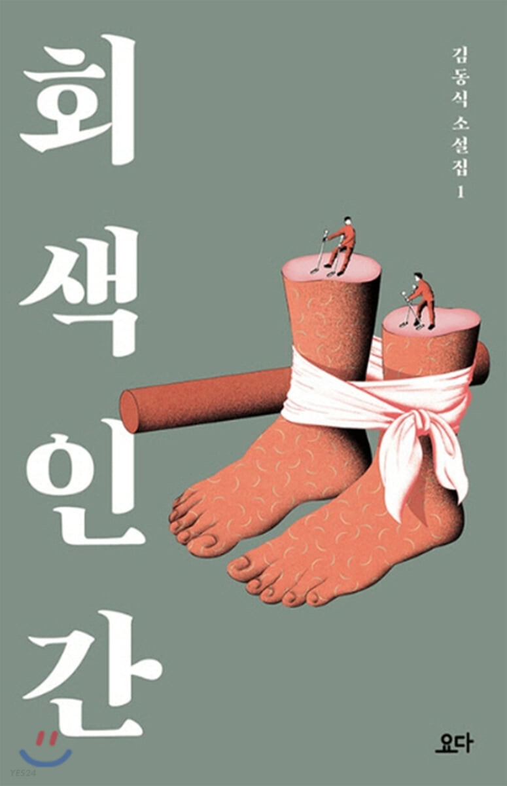

.
.
. 공포게시판에서 많은 이들의 호응을 얻었던 김동식의 소설집 출간!

회색인간
전에 없던 새로운 작가의 탄생 !
노동하는 작가이자 독자가 만들어 낸 작가,
김동식 노동의 고독을 승화하여 써내려간 뜨거운 소설!
우리의 상식을 두드리는 묵직한 거짓말 김동식 작가 김동식의 단편소설에서만 느낄 수 있는 재미 어떻게 즐길 수 있을까? 첫째 21가지의 다양한 이야기가 한 책에 담겨있어 읽을 때 마다 새롭게 둘째 김동식 작가만의 공포스럽고도 신비로운 느낌 셋째 책에서 던지는 주제에 대해 생각하며 깊게 생각 이런 사람들이 좋아해요 1 2 3 열린 결말을 좋아하며 교훈을 주는 소설을 선호하는 사람 김동식 작가의 이야기를 모아서 보고 싶은 사람 나이가 좀 있는 40~50 대 보단 10~20대들 작가의 다른 작품